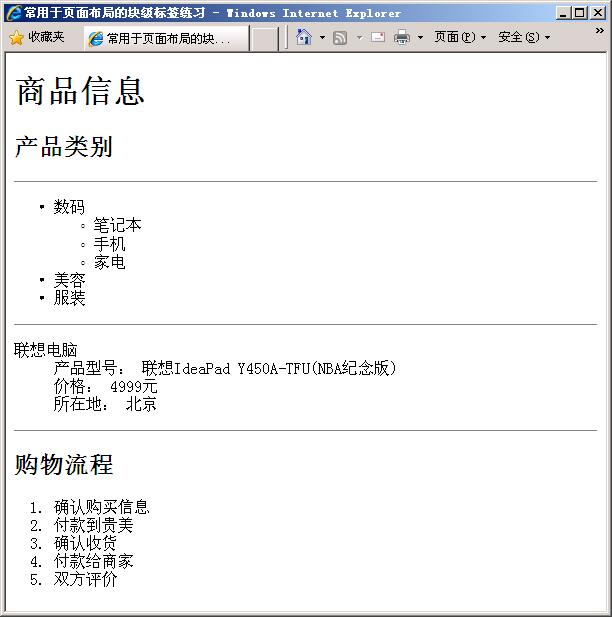

html 标签分类
1. 块级标签：占据一整行
1)标题 h1~h6
2)段落p
3)列表ul(无序号列表)或ol(有序号列表) + li
有序号对比
- 高中
- 专科
- 本科
4)介绍dl +dt + dd
- 数学
- 加减乘除
5)表格 table + tr 行 + th列头 +td 数据+ thead + tbody
| 学号 | 姓名 | 班级 | 性别 |
| 001 | 张三 | 计科1 | 男 |
| 002 | 李四 | 男 |
| 003 | 王五 | 男 |
| 总人数 | 3 |
2.行级标签：是行内一块内容
1)图片 img
- 图片的高度同时指定，可能会产生变形
- 图片引用网络资源,src可以写网络路径
- 图片引用本地资源，src根据路径编写()


2)超链接--a
- 超链接跳转定义在href ==》 html ref引用
- 跳转到外站资源==》 淘宝，必须要以http开头
- 跳转到本站资源，地址格式请参考img 的 src
- 超链接可以实现页面内导航， 导航到锚点位置指定的id
淘宝网
登录
跳转到学历列表
3)表单标签 form input button select textarea
- action="定义表单提交的资源路径==》跳转的页面"